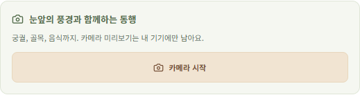
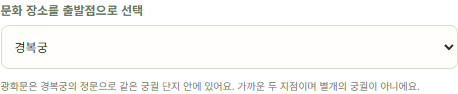

허용된 상태 조회
200
허용 GET 요청 성공
독립 수신기에서 1회 확인
한글 이름과 역사 맥락을 묻고,
다음 걸음을 정합니다.
2025년 방한 외래객 18,936,562명
함께 탐색할 장면
경복궁
광화문
골목의 식당
문화·역사와 일상을 잇는 여행
기기에서 장면 보기
분석 실행과 구분
선택적 분석 · 최소 20초 간격
관심을 확인하는 질문
현재 프레임 자동 캡처
장면 고정은 선택


로컬 미리보기
선택 프레임 전송
세션·소유권 검사
결과 검증·영구 저장
에이전트 worker
허용된 도구 호출
Nemotron Nano
12B v2 VL · BF16
nvidia/NVIDIA-Nemotron-Nano-12B-v2-VL-BF16 · vLLM 0.12.0
개발 중인 호출 조건: 20초 이상 간격 · 이전 응답 완료 후 다음 프레임 분석
worker
장면 후보 판단 · 등록 자료 조회
구조화된 안내 반환
Broker
근거·형식·좌표·소유권 검사
사용자별 여행 카드 영구 저장
광화문은 경복궁의
남쪽 정문입니다.
세 홍예문 중 가운데 문은
왕이 지나던 통로였습니다.
역사적 통행 설명 · 현재 출입 규칙 아님
확인한 장소에 문화·역사의 근거를 연결
장면 후보·위치·질문을 함께 보고
불확실하면 사용자에게 확인합니다.
역사적 맥락과 현재 운영 정보를
같은 사실로 묶지 않습니다.
근거가 부족하거나 충돌하면
모름과 확인 질문을 남깁니다.
“이곳에는 어떤 이야기가 있나요?
주변에서 식사할 곳도 함께 알려 주세요.”
관심 확인 · 현재 장면
한글 이름 · 역사 근거
검증된 결과만 저장
허용 GET 요청 성공
독립 수신기에서 1회 확인
예약 POST 차단
비허용 목적지도 수신 0
읽기·쓰기·삭제 시험
보호 파일의 전후 해시 동일
자체 무해한 시험 파일·수신기로 검증했습니다.
정책 로그와 수신 기록을 대조한 결과이며, 모든 경로의 안전성을 뜻하지 않습니다.
확인된 개별 동작
실제 모델 API 응답 완료
Android 카메라·캡처 유지
휴대폰 동작은 사용자 확인 기준
주기 분석·선제 질문·문화 답변은 검수 중
전체 Android 시연은 아직 검증 중입니다.
경복궁 · 광화문
출처와 함께 이해할 맥락
문화 장소 ↔ 주변 식사